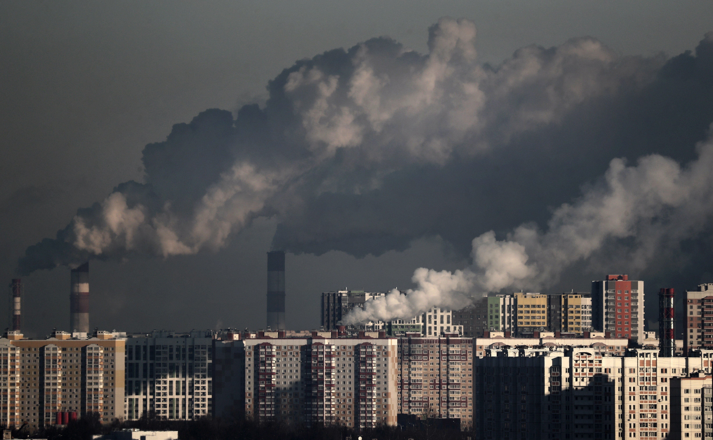

By Abigail Weilbacher
Social media is gaining accessibility throughout the world causing trends to become more and more prominent. The fashion industry is very competitive. When trends are constantly appearing and disappearing businesses are forced to continue to mass produce products to keep their consumers engaged. As this cycle pursues it pushes harsh environmental hazards onto our planet.